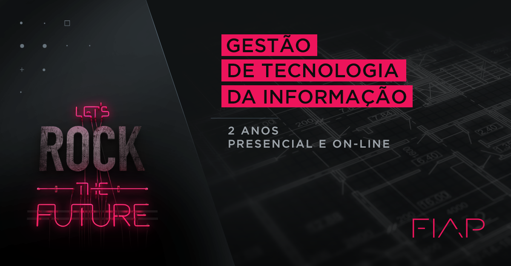

Gestão de Tecnologia da Informação
O Curso
Você vai planejar e gerenciar sistemas computacionais (hardware) e de informação (software) nas áreas de processos, mobilidade, segurança, tecnologias emergentes, sistemas integrados, big data, cloud computing, engenharia de software, marketing digital e redes sociais.
O curso traz uma abordagem equilibrada entre o conhecimento técnico e de gestão, unindo conhecimento base de plataformas de desenvolvimento com metodologias de projetos.
A grade foi desenvolvida para que, desde o primeiro ano, os alunos recebam a base necessária para atuarem na área de TI de grandes empresas.